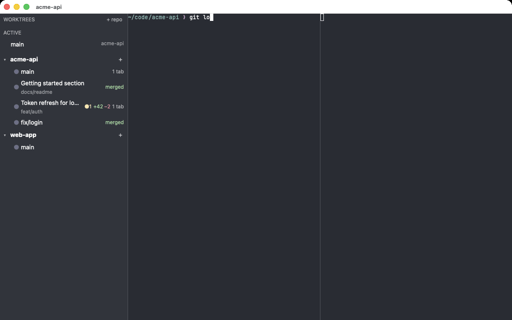
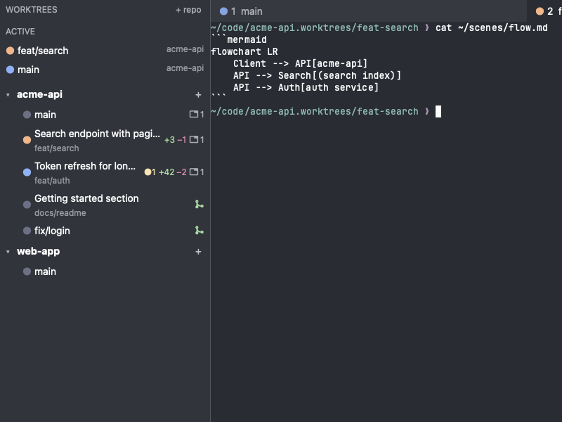
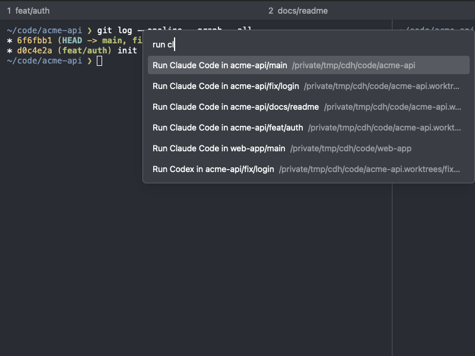
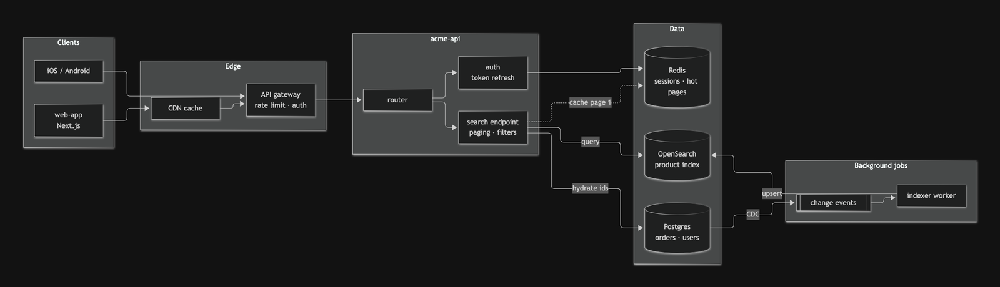
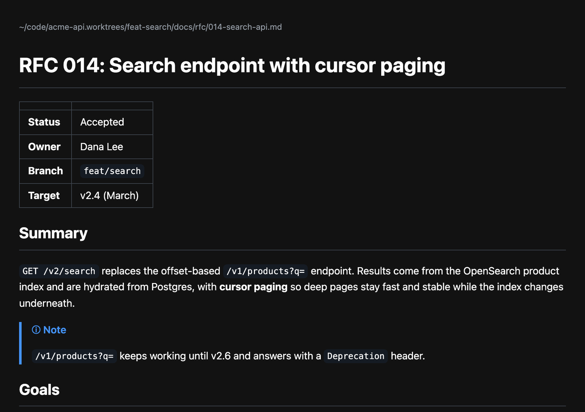
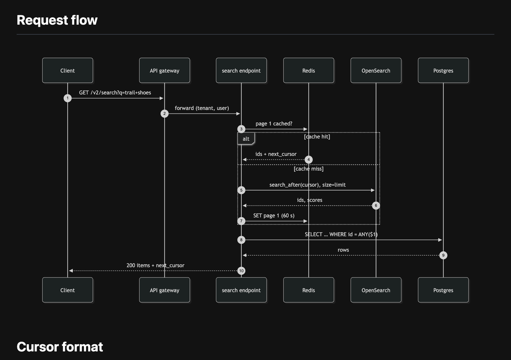

chda
A terminal with a git worktree sidebar and a live status board for coding agents.
brew tap magicsih/tap && brew trust magicsih/tap && brew install --cask chda

Why a worktree terminal
Ghostty inside
True color, Unicode, IME, search and your Ghostty font and colors. Follow links and paths, show Kitty graphics, and preview Mermaid diagrams and Markdown offline.
Keep your place, close safely
Restore windows, layouts and supported agent conversations. Keep previous working context and close one pane or a whole tab safely.
The task in the title
See the repository and focused branch task together. Hover for the full context or open the worktree in your favorite editor.
Live sessions at a glance
Find your selected worktree near the top, follow split-pane branch changes, collapse ACTIVE and Idle Agents independently, and keep favorite branches starred.
One worktree per task
Create from any branch, label it with a note, read its diff, update from upstream, then merge and clean up with checks for unsaved or unpushed work.
Read the Git tree
Choose View Git tree from the repository menu for commit connections, subjects, short hashes and branch, tag and HEAD labels. Browse in a read-only tab, refresh and restore it after restarting.
Agents you can see
Track Claude Code, Codex, Gemini CLI, Copilot CLI and OpenCode. Notifications open the right pane; past conversations resume together or side by side.
Quota and local session resources
See Claude Code and Codex quota, clear loading and retry states, reset countdowns, and selected-pane CPU, memory and listeners.
Every action in one place
Press cmd-shift-p to find worktrees, launch agents, resume sessions and run actions. Agents can create worktrees and open tabs through chda mcp.
Your terminal, your settings
Reuse your Ghostty font, colors and padding. Edit chda's TOML settings without restarting. Homebrew and version-manager agents are found through your login shell's PATH.
Git history and live sessions


What it looks like


Diagrams and Markdown, rendered offline
Mermaid in an agent's answer opens as a diagram, and Markdown files open formatted, as local pages in your browser. Nothing is uploaded; scripts in the document do not run.



Install
brew tap magicsih/tap brew trust magicsih/tap brew install --cask chda
macOS 14 or newer, Apple silicon or Intel. Signed and notarized. Needs git; gh, glab or tea add pull request badges for GitHub, GitLab or Gitea. Prefer a zip? Get it from the releases page.
Questions
- How do I run several Claude Code agents in parallel?
- Give each task its own git worktree and run one agent in each. chda creates the worktree from the sidebar (or from the agent, through chda mcp), opens a tab in it, and shows every agent's state next to its branch: working, waiting for you, or done.
- Which coding agents does chda work with?
- Claude Code, Codex, Gemini CLI, GitHub Copilot CLI and OpenCode. Their status shows in the sidebar, on tabs and on the Dock icon. Codex is also tracked when you type codex directly in a chda zsh, bash or fish terminal with shell integration enabled.
- How is chda different from tmux or Ghostty?
- Ghostty is the terminal; chda uses its core (libghostty-vt) and adds what parallel agent work needs: a sidebar of worktrees with git and pull request badges, agent status, notifications when an agent waits, and merge-and-clean when a branch is done.
- Does chda read my prompts?
- Only on your Mac. Hooks pass a session id, directory, event kind and time; the session list reads the agents’ local transcripts for each session’s first prompt and token usage. Nothing is sent anywhere. The only network request is a daily check for a new chda release, which
update-check = falseturns off. - Do I have to change my agents' config?
- No. chda passes hook settings per launch and leaves your config files alone. Only the optional MCP server is added once per agent, with the agent's own
mcp addcommand. - Can I just type codex in a terminal?
- Yes. In chda's zsh, bash and fish terminals, typing codex tracks working, waiting for input and finished turns with shell integration enabled. Existing aliases and functions are kept. If your own wrapper bypasses the helper, use Run Codex from the worktree menu. See the README for Codex terminal-title requirements.
- Can I launch Homebrew-installed agents from the Dock?
- Yes. chda reads PATH from your login shell's startup files and uses it to find and run agents, including Homebrew and version-manager installations. Restart chda after changing your shell's PATH. If startup files cannot report PATH within two seconds, chda keeps the inherited PATH.
- Linux or Windows?
- They build in CI and are the next milestone. Today it is macOS only, on Apple silicon or Intel.